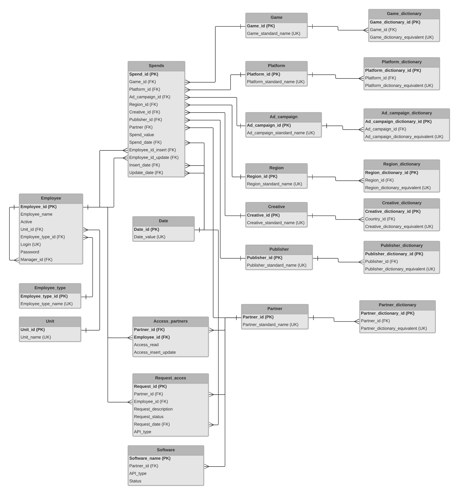

Example of SRS. Project "Marketing". Systems Analysis.
Home
This is the page for demonstrating skills of:
data structure designing
software requirements describing
mock-ups creating

To be continued...